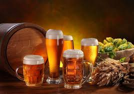

Minuman Terkenal di Jerman
Jerman tidak hanya terkenal karena makanannya, tapi juga memiliki berbagai minuman khas yang unik dan beragam. Mulai dari bir klasik hingga minuman non-alkohol tradisional yang menyegarkan
- Weißbier - Bir gandum khas Bavaria dengan rasa ringan dan sedikit manis.
- Glühwein - Minuman anggur hangat yang dibumbui, populer saat musim dingin dan pasar Natal.
- Apfelschorle - Campuran jus apel dan air soda, segar dan populer sebagai minuman sehari-hari.
- Schorle anggur - Anggur putih dicampur dengan air soda, menjadi minuman ringan yang menyegarkan.
Fun Fact: Jerman memiliki lebih dari 1.300 pabrik bir dan lebih dari 5.000 merek bir yang berbeda. Negara ini juga menjadi tuan rumah Oktoberfest, festival bir terbesar di dunia!

Galeri Beer Jerman


Tips Menikmati: Bir Jerman paling nikmat disajikan dalam gelas dingin. Untuk non-alkohol, Apfelschorle cocok diminum saat cuaca panas. Minuman seperti Glühwein lebih pas dinikmati saat musim dingin.
Jika kamu berkesempatan berkunjung ke Jerman, cobalah berbagai jenis minumannya! Dari festival bir hingga kafe kecil, semuanya menawarkan pengalaman rasa yang otentik dan khas.